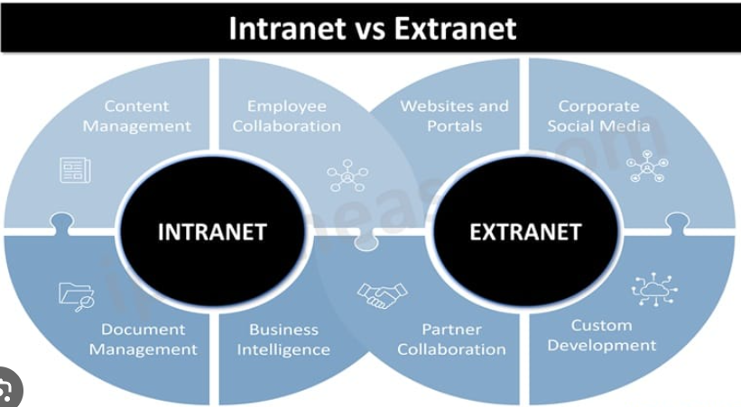

An intranet is a private network that uses Internet protocols and infrastructure, such as TCP/IP, to facilitate communication and resource sharing within an organization. It is typically used to provide employees with access to internal resources, such as documents, databases, and applications.
Intranets can be accessed through a web browser and often require authentication to ensure that only authorized users can access the resources. They can include features such as file sharing, messaging, and collaboration tools.

Overall, intranets play a crucial role in enhancing communication, collaboration, and productivity within organizations by providing a secure and centralized platform for sharing information and resources.